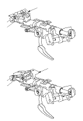

Lenksäule aus- und einbauen
|
In diesem Bereich befinden sich SRS-Bauteile.
Informieren Sie sich vor der Durchführung von Reparatur- und Wartungsarbeiten über die Anordnung von SRS-Bauteilen
und beachten Sie die einschlägigen
Warnhinweise und Verfahrensanweisungen
.
Ausbau

Die Halterung (A) vorn an der Lenksäule darf nicht bewegt werden. Wenn die Halterung versehentlich gelöst wird, muss die komplette Lenksäule ausgetauscht werden.
|
 |